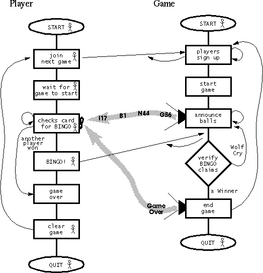

Feedback Form
|
|
Start of Tutorial > Start of Trail > Start of Lesson |
Search
Feedback Form |
Our implementation of the BINGO game in Java is a client/server application, and as such, is comprised of two Java programs that run in separate Java Virtual Machines.The Game application is the server, and the Player application is the client.
The Game manages BINGO games. It registers players and generates the cards that they play with, starts and stops games, announces the balls as they are chosen from the bag of balls, verifies winning cards, prevents players from being a nuisance, and provides status to game listeners.
The Player provides the interface for users to interact with the BINGO game. To play, a user pushes the Join the Next Game button. If the Player is allowed to play, the Game gives some BINGO cards to the player. As the game proceeds the user marks the card as balls are announced. When the card has a BINGO (5 in a row, column, or diagonal) the user clicks a button which notifies the Game of the win.
Here's a chart that describes the flow of the BINGO game. The flow chart leaves out some details but basically the flow of the game is as follows:
This figure has been reduced to fit on the page.
Click the image to view it at its natural size.
- A Game starts up.
- A Player starts up. Other players may also start up.
- The first Player joins the next game.
To join a game, a user must enter some information into the GUI and click the Join the Next Game button. The Player application sends the information to the Game who returns a Player ID and some BINGO cards to play with. The BINGO cards are displayed by the Player.- After the first Player has joined a game, the Game begins a countdown to the beginning of the game. Players can continue to join the game until the countdown is over. Then the game begins.
- To start a game, the Game just starts announcing balls--there is no announcement of the beginning of the game.
- The Player application displays the newest ball and all of the balls announced to date. The user checks the card against the balls announced and looks for a BINGO (5 in a row, column, or diagonal).
- When a user notices a BINGO, s/he clicks the BINGO! I Won! BINGO! button. The Player application sends the Player ID and the winning card to the Game.
- The Game pauses the game (stops announcing balls) while it verifies the Player ID and the card. The card must have been signed for the current game by this Game application and it must have a BINGO. If indeed we have a winner, then the game is over and the Game sends the "end-of-game" ball. If the card was not a winner, then the Player "cried wolf" and is given a warning. Three wolf cries and the player is kicked out of the game.
- After the game is over, the user can clear the Player application and join the next game, or quit the Player application. After the game is over, the Game automatically clears its status display, and waits for the first player to join the next game.
To get a better understanding of the flow of the game, you should play. The next section shows you how.
|
|
Start of Tutorial > Start of Trail > Start of Lesson |
Search
Feedback Form |